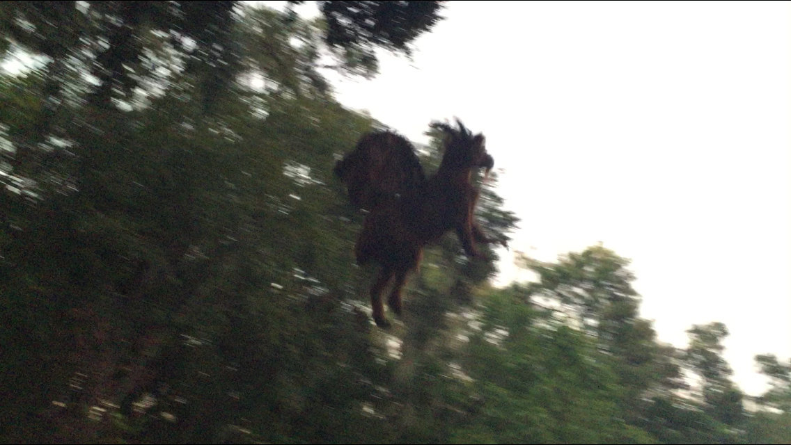

"Pine Barrens Wharton State Forest is New Jersey hikers paradise"
"Its a great day trip for your family reasonably priced. I love it..."
"I love the Pines and look forward to going back many times in the future"
Pine Barrens, New Jersey is the largest body of open space on the Mid Atlantic seaboard. It is home to many pine trees and sandy roads. It is a beautiful place to hike, swim, camp or just to have a picnic! Not only is it home to many beautiful types of animals and plants, it is also home to "The Jersey Devil." For more than 250 years, the devil is said to prowl around Pine Barrens forest. The devil is said to looi like a kangaroo-like creature with the face of horse, bat-like wings, the face of a dog, horns and a tail.
Things to Do Around the Forest